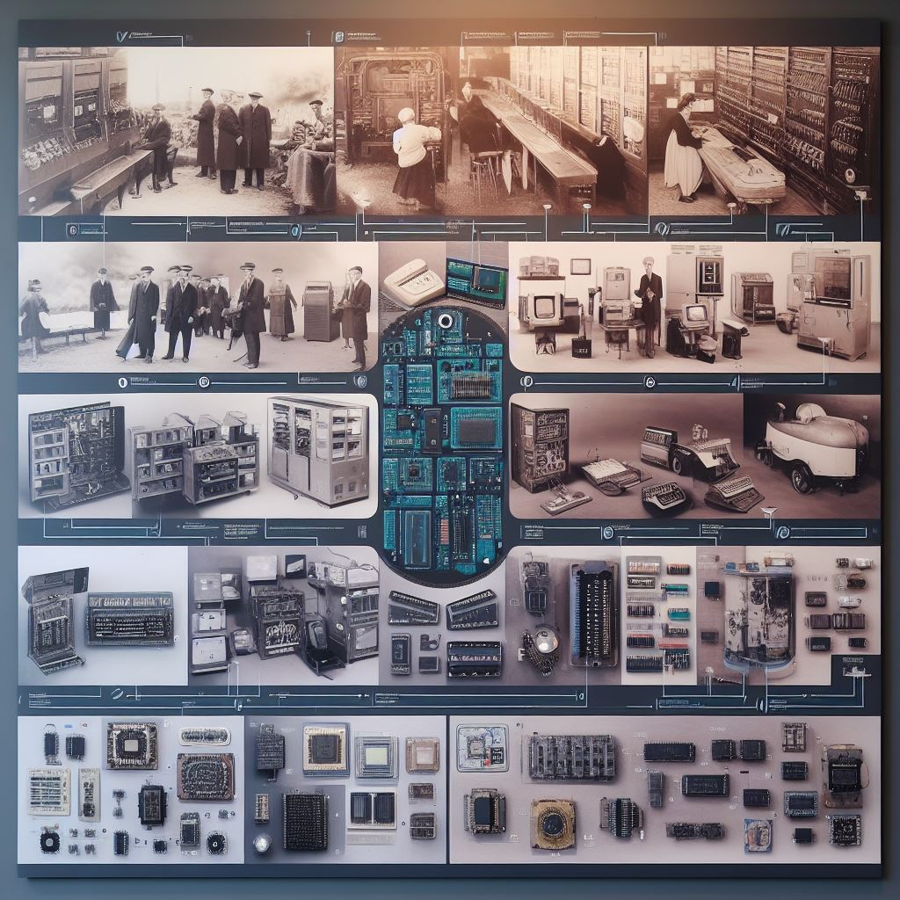
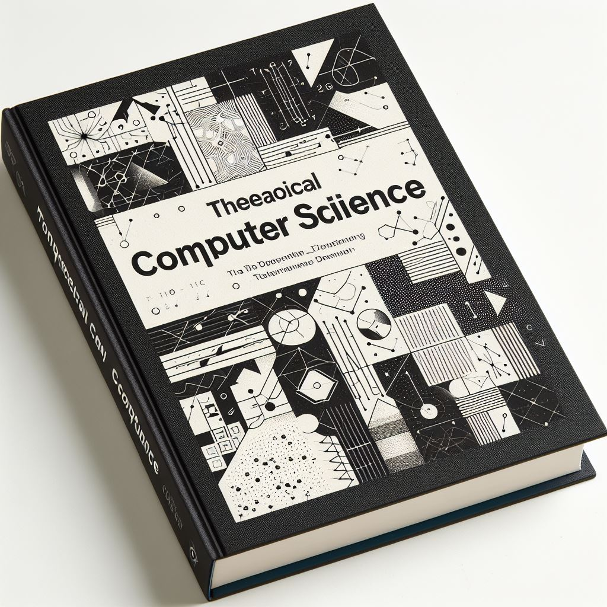
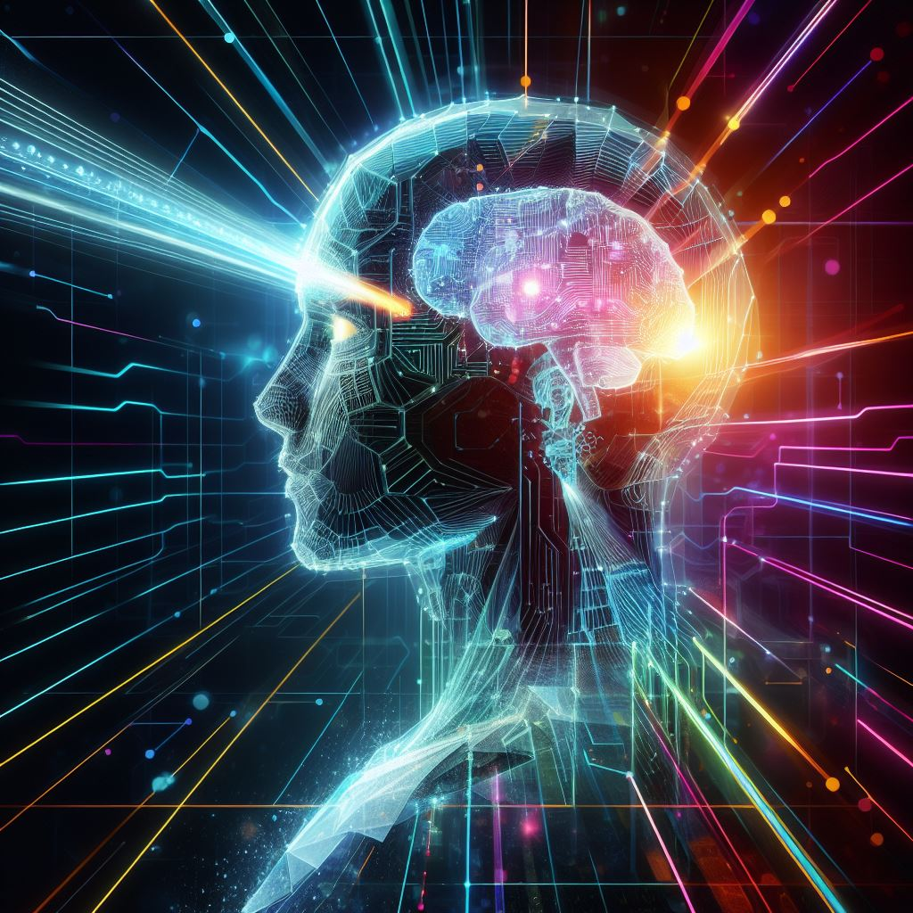
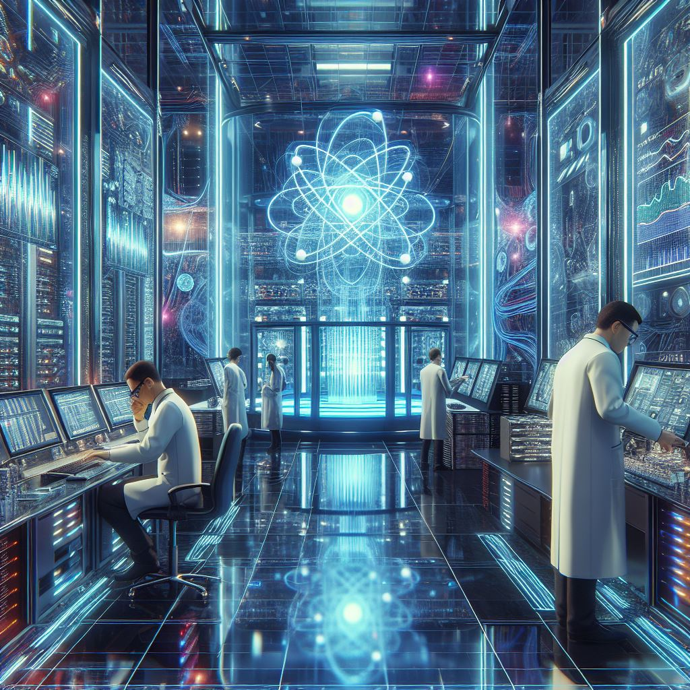
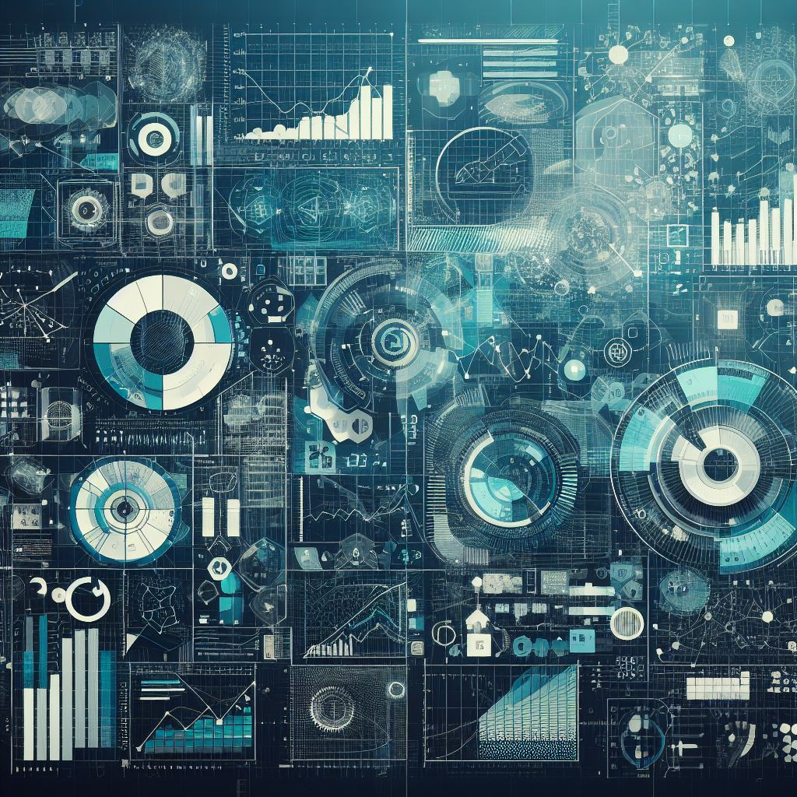
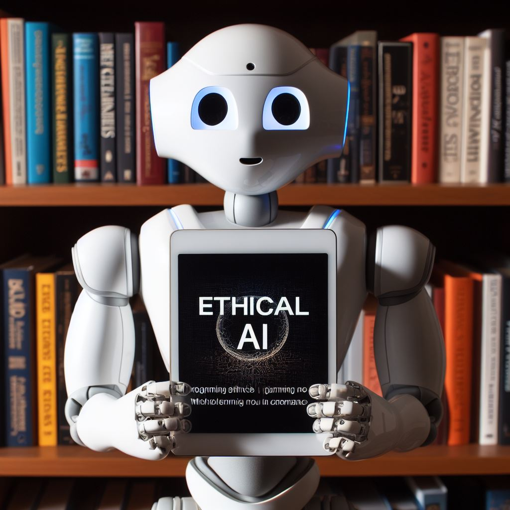
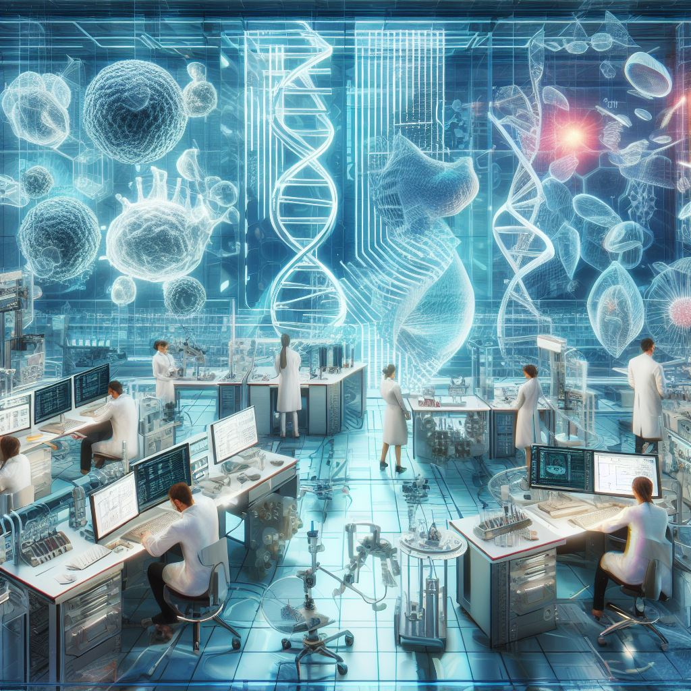
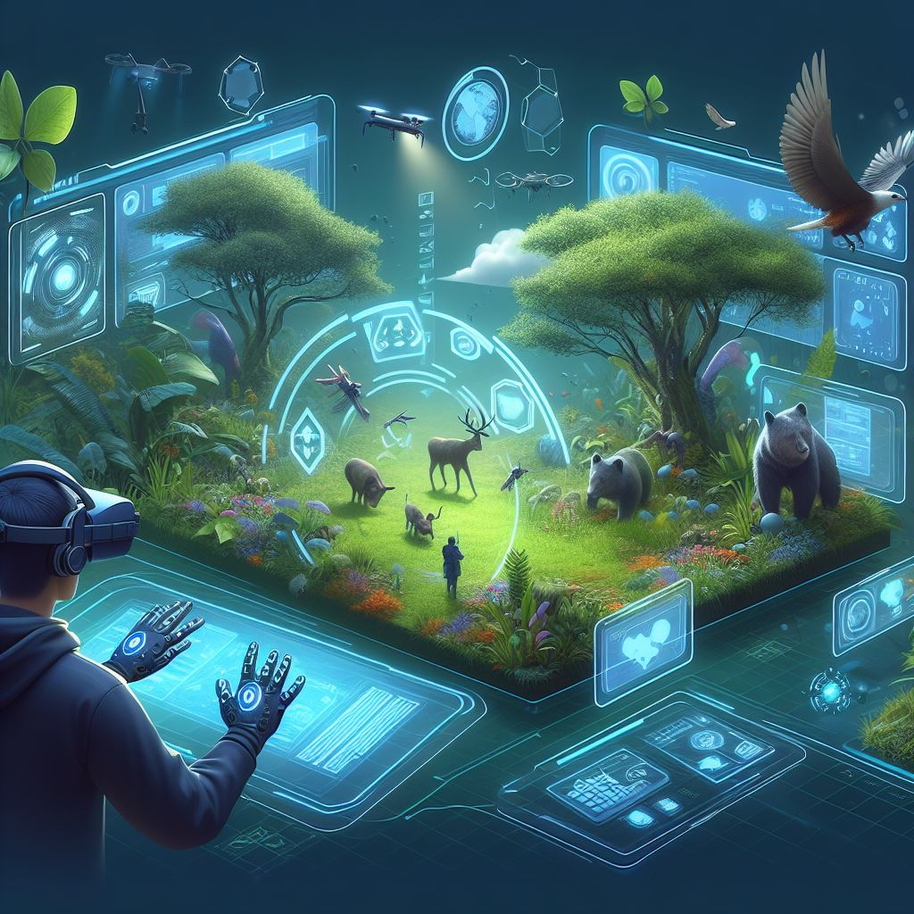

The Ever-Evolving World of Computer Science
Published on November 29 , 2023 by P.V.S.Adithya and G.Srirama Subrahmanyam
Introduction
In our rapidly advancing technological landscape, the field of computer science stands at the forefront of
innovation and discovery. From the early days of punch cards and mainframes to the era of artificial
intelligence and quantum computing, the world of computer science has come a long way. In this extensive blog
post, we'll embark on a comprehensive journey through the history of computer science, examine its current
trends and challenges, and peer into the exciting possibilities that the future holds for this dynamic field.
The Evolution of Computer Science
The roots of computer science can be traced back to the mid-20th century when pioneers like Alan Turing and
Grace Hopper made groundbreaking contributions to the development of the digital computer. Turing's concept of
the Turing machine laid the foundation for theoretical computer science, while Hopper's work on the first
compiler led to the creation of high-level programming languages.
As the decades rolled on, the field continued to expand. The advent of personal computers in the 1980s brought
computing to the masses, while the internet revolutionized communication and information access. In the 21st
century, the rise of mobile technology and the cloud, along with the explosion of data, gave birth to new
challenges and opportunities in computer science.
The Growth of Computer Science as a Discipline
Computer science, as a formal discipline, has undergone significant growth and transformation. It's important
to understand the key stages in the development of computer science:
1. Emergence of Computer Hardware: The earliest computers were massive machines that required entire rooms to
house. The invention of transistors and integrated circuits in the mid-20th century marked a significant leap
in hardware technology. This miniaturization of components led to the creation of more affordable, powerful,
and accessible computers, eventually leading to the personal computer revolution.

2. Birth of High-Level Programming Languages: Grace Hopper's pioneering work on compilers laid the foundation
for high-level programming languages. These languages allowed developers to write code in a more human-
readable format, making software development more accessible to a broader audience.

3. Theoretical Computer Science: Alan Turing's concept of the Turing machine and his work on computability
theory had a profound impact on the theoretical underpinnings of computer science. This branch of computer
science explores the limits of what computers can and cannot compute, offering essential insights into
algorithm design and complexity theory.

4. The Rise of Software Engineering: As software became increasingly important in various applications, the
field of software engineering emerged. It focuses on developing systematic methods and best practices for
designing, testing, and maintaining software systems.
5. Networking and the Internet: The development of computer networks, along with the creation of the internet,
revolutionized communication and information exchange. Tim Berners-Lee's invention of the World Wide Web in
the early 1990s made the internet accessible to the general public, further propelling the growth of computer
science.
Current Trends and Challenges
1. Artificial Intelligence (AI)
AI has become a buzzword in recent years, with machine learning and deep learning algorithms achieving
remarkable results in tasks like image recognition, natural language processing, and game playing.
The potential applications of AI are virtually limitless, from autonomous vehicles to healthcare and finance.
AI has made significant strides in various domains, including:
- Natural Language Processing (NLP): NLP has seen remarkable advancements in sentiment analysis, chatbots,
and machine translation. GPT-3, an AI language model developed by OpenAI, has demonstrated the ability to
generate human-like text.
- Computer Vision: Computer vision systems can identify objects and patterns in images and videos, leading
to applications in facial recognition, autonomous vehicles, and medical imaging.
- Reinforcement Learning: Reinforcement learning has proven to be effective in training agents to make
decisions in dynamic environments, making it crucial in robotics and gaming.
- Ethics and Bias in AI: As AI systems become more integrated into our daily lives, addressing issues
related to bias, transparency, and ethical decision-making in AI algorithms is paramount. Computer
scientists are actively working on developing responsible AI practices.

2. Cybersecurity
With the increasing reliance on digital technologies, the need for robust cybersecurity measures has
never been greater. Cyberattacks are becoming more sophisticated, making it imperative for computer
scientists to develop innovative solutions to protect data and privacy.
Key trends in cybersecurity include:
- Zero Trust Architecture: Zero Trust is an approach that advocates the principle of "never trust,
always verify." It assumes that threats can exist both outside and inside the network, and thus, trust
should not be granted automatically.
- Artificial Intelligence in Cybersecurity: AI is being used to enhance threat detection and response,
enabling systems to identify and counter threats in real time.
- Blockchain Technology: Blockchain, with its inherent security features, is being explored for various
applications, including secure digital identity and supply chain management.
- Post-Quantum Cryptography: With the emergence of quantum computing, there's a growing need for
cryptography that can withstand quantum attacks.
- Privacy and Data Protection Regulations: Stricter data protection regulations, such as GDPR and CCPA,
are driving innovation in data security and privacy compliance.
3. Quantum Computing
Quantum computing promises to revolutionize the field by solving complex problems that are currently
beyond the capabilities of classical computers. Researchers are making strides in building quantum
processors, and as they become more practical, quantum computing will open up new possibilities in
cryptography, optimization, and scientific research.
Key developments in quantum computing include:
- Quantum Supremacy: Quantum supremacy refers to the point at which a quantum computer can outperform
classical computers in specific tasks. Google's quantum computer, Sycamore, demonstrated quantum supremacy
by completing a complex computation faster than the most advanced classical supercomputer in 2019.
- Quantum Algorithms: Researchers are working on developing quantum algorithms that can solve problems in
areas such as cryptography, drug discovery, materials science, and optimization more efficiently than
classical algorithms.
- Quantum Hardware: Companies like IBM, Google, and Rigetti are actively working on developing practical
quantum processors. Quantum hardware, including superconducting qubits and topological qubits, is becoming
more accessible.
- Quantum Software and Tools: The development of quantum software and tools is crucial for enabling
programmers to work with quantum systems effectively. Open-source quantum development platforms like
Qiskit and Cirq are gaining popularity.

4. Internet of Things (IoT)
The Internet of Things (IoT) is a rapidly growing field that involves connecting everyday objects to
the internet. Computer scientists are working on optimizing communication between devices and ensuring
the security and privacy of data in this interconnected world.
Key trends in IoT include:
- Edge Computing: Processing data at the edge (closer to where it's generated) rather than in centralized
data centers improves real-time data processing and reduces latency in IoT applications.
- 5G Connectivity: The rollout of 5G networks enhances the speed and reliability of IoT devices, enabling
new applications in smart cities, healthcare, and autonomous vehicles.
- IoT Security: As the number of connected devices increases, so does the attack surface for cybercriminals.
Ensuring the security of IoT devices and networks is a top priority.
- Industrial IoT (IIoT): IIoT is transforming industries by optimizing manufacturing processes,
predictive maintenance, and supply chain management. It's creating new opportunities for computer
scientists to design efficient systems and algorithms.
 5. Big Data
5. Big Data
The era of big data has transformed the way we gather, process, and analyze information. Computer scientists
are developing tools and techniques to manage and extract insights from vast amounts of data, aiding
decision-making in various industries.
Key trends in big data include:
- Data Analytics and Business Intelligence: Advanced data analytics tools are being used to extract meaningful
insights from big data, helping businesses make data-driven decisions.
- Machine Learning in Big Data: Machine learning algorithms are used to analyze large datasets, identify
patterns, and make predictions in areas such as finance, healthcare, and marketing.
- Data Privacy and Ethics: As the collection and use of data grow, concerns about privacy and ethical data
handling are driving the development of regulations and best practices.
- Data Integration: Integrating data from multiple sources is a challenge, and computer scientists are working
on solutions for data harmonization and integration.

The Future of Computer Science
Looking ahead, computer science is poised to continue its evolution in exciting ways:
1. Ethical AI
As AI applications become more widespread, addressing the ethical implications of AI decision-making is
critical. Computer scientists will play a pivotal role in defining and implementing ethical guidelines for
AI systems.
Key considerations for ethical AI include:
- Fairness and Bias: Ensuring AI systems are free from bias and provide equitable outcomes for all users.
- Transparency and Explainability: Making AI systems more transparent and providing explanations for their
decisions.
- Accountability: Defining who is responsible for the actions and consequences of AI systems.
- Data Privacy: Protecting user data and respecting privacy while using AI for personalized services.

2. Biocomputing
The intersection of computer science and biology is opening new frontiers in genomics, drug discovery,
and healthcare. Biocomputing may hold the key to solving complex biological problems.
Key areas in biocomputing include:
- Genomic Data Analysis: Analyzing vast genomic datasets to understand diseases, identify genetic markers,
and develop personalized medicine.
- Drug Discovery: Using computational methods to design and discover new drugs and therapies.
- Health Informatics: Leveraging electronic health records and health-related data for improved patient care
and public health management.
- Synthetic Biology: Combining biology and computer science to engineer biological systems for various
applications.

3. Quantum Supremacy
The development of practical quantum computers will transform fields like cryptography, material science,
and climate modeling. Computer scientists will work to harness the power of quantum computing for real-world
applications.
Key future quantum computing applications include:
- Cryptography: Developing quantum-resistant encryption algorithms to secure communications in a post-quantum
world.
- Quantum Simulations: Simulating complex quantum systems for advancements in materials science, drug
discovery, and climate modeling.
- Optimization Problems: Solving complex optimization problems in logistics, finance, and manufacturing
with quantum computing.
- Machine Learning Acceleration: Using quantum computers to speed up machine learning and data analysis tasks.
 4. Augmented and Virtual Reality (AR/VR)
4. Augmented and Virtual Reality (AR/VR)
The entertainment, education, and healthcare industries are embracing AR and VR technologies. Computer
scientists will contribute to making these technologies more immersive and accessible.
Key developments in AR and VR include:
- Mixed Reality: Combining elements of both AR and VR to create immersive and interactive experiences.
- Healthcare Applications: Using VR for therapy, training, and medical visualization, and AR for telemedicine
and medical assistance.
- Educational Virtual Worlds: Creating immersive educational environments for remote learning and training.
- Gaming and Entertainment: Advancements in graphics, interaction, and storytelling for more engaging
experiences.

Conclusion
Computer science has come a long way since its inception, and it continues to be a driving force in our
ever-evolving technological world. From the pioneers of the past to the cutting-edge developments of the
present, the field of computer science holds the promise of shaping a future filled with innovation and
possibility. As we navigate the complexities of AI, cybersecurity, quantum computing, IoT, and big data,
the role of computer scientists becomes increasingly critical.
The journey of exploration and discovery in computer science is far from over, and the horizon is filled
with exciting challenges and opportunities for those who choose to embark on it. The remarkable achievements
of the past, the dynamic landscape of the present, and the boundless possibilities of the future ensure that
computer science will remain a vibrant and essential field at the forefront of technological progress.
In this ever-evolving world, computer science is the compass guiding us toward a future limited only by our
imagination and innovation.